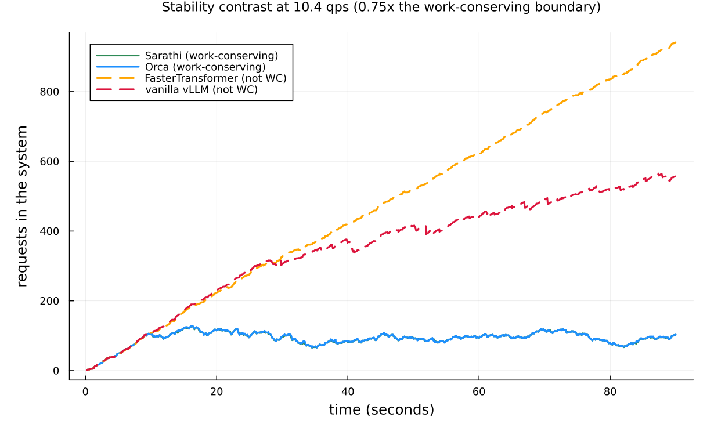
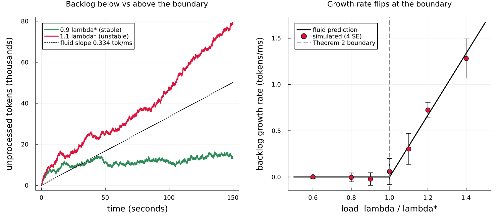
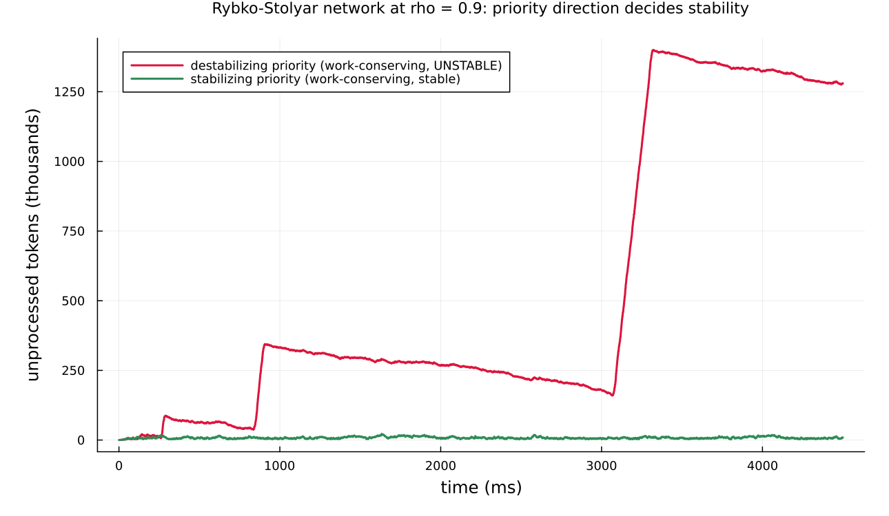

Throughput-optimal scheduling for LLM inference
This page walks through examples/dai2026_llm_scheduling.jl: a reproduction of the central stability results of Dai, Deng, Li & Peng, "Throughput-Optimal Scheduling Algorithms for LLM Inference and AI Agents" (arXiv:2504.07347, arxiv.org/abs/2504.07347).
The paper asks a queueing question about scheduling algorithms for large language model (LLM = large language model) inference: which ones keep the server stable under load, and which ones fall over. It answers with a clean principle — work-conserving scheduling is throughput-optimal — and shows that two widely deployed algorithms violate it. This example reproduces that contrast, the stability boundary that underlies it, and a networked counter-example where even a work-conserving policy destabilizes.
The example builds directly on Concourse's round-based token service; read Round-based token service first for the Rounds machinery and the shipped policies. It is a companion to the M/G/1 LLM example, which models a single-request-at-a-time server; here the server batches many requests per iteration.
What the system does
An LLM answers a request in two phases. The prefill phase reads the whole input prompt to build the model's KV cache (KV = key-value; the per-token attention state the model reuses so it does not recompute earlier tokens). The decode phase then generates the answer one token at a time, because each new token depends on the previous one.
The server does not finish one request before starting the next. At every iteration — one forward pass through the model on the graphics processing unit (GPU) — the scheduler forms a batch of tokens drawn from many requests at once: a chunk of prefill tokens from one request, a single decode token from each of several others. It runs the batch through the GPU, and every request in the batch has its remaining work reduced by exactly what it was allocated. Requests stay resident across many iterations. Queueing theory calls this iteration-level batching.
Two constraints shape the batch. The token budget b_max caps the total number of tokens processed per iteration (hardware cannot process an unbounded batch). The rule that decode contributes at most one token per request per iteration is a hard consequence of autoregression — you cannot generate token k+1 before token k exists.
The intervention the paper studies is the scheduling algorithm: given the waiting and in-progress requests, which tokens go in the next batch? Four real algorithms, each shipped as a Concourse RoundPolicy:
| Algorithm | Concourse policy | Priority | Mixed batching? | Work-conserving? |
|---|---|---|---|---|
| FasterTransformer | FasterTransformerRule | decode-first | no | no |
| vanilla vLLM | VanillaVLLM | prefill-first | no | no |
| Orca | Orca | prefill-first | yes | yes |
| Sarathi-Serve | Sarathi | decode-first | yes (chunked prefill) | yes |
A policy is work-conserving if it fills the batch to b_max whenever there is enough waiting work to do so — it never leaves GPU capacity idle when work is available. Mixed batching (combining prefill and decode tokens in one batch) is what lets a policy stay work-conserving: without it, an all-decode batch with only a few active requests wastes most of the budget.
Why this maps to Concourse round service
Concourse expresses iteration-level batching with the rounds keyword of station!. A round station has one station-level clock per round, per-job integer work counters, and a policy hook consulted at every round boundary. That is exactly the paper's model: the clock is the forward-pass timer, the counters are the unprocessed (prefill, decode) token counts, and the policy is the scheduling algorithm. Nothing else changes — arrivals, routing, and records keep their usual meaning.
station!(net, :gpu;
rounds = Rounds(policy = Sarathi(budget = 512),
duration = dai_staircase(),
work = (:v_p, :v_d)))The work marks (:v_p, :v_d) are the prefill and decode token counts, in phase order; they are snapshotted into integer counters when a request is admitted. The last phase (:v_d) is decode; earlier phases are chunkable prefill.
The batch-processing-time model
How long does one forward pass take? The paper's key empirical finding (Sec. 2.3, Fig. 5-6) is that on real hardware the batch time depends almost only on the token load b (the total tokens in the batch), not on which requests contributed them, and follows a staircase:
t_b = c + a * ceil(b / b_0) milliseconds.The cost jumps every b_0 tokens (b_0 is the hardware block size). For CodeLlama-34B on one A100 80GB GPU at tensor-parallel size 1, the paper fits c = 11.28 ms, a = 35.47 ms, b_0 = 128 tokens, with R² above 0.97. All times in this example are in milliseconds.
In Concourse the duration is a Dirac (deterministic) law that reads the round's total token allocation through the frozen pseudo-mark :tokens:
dai_staircase() = Law(:Dirac;
value = Const(11.28) + Const(35.47) * ceil(Mark(:tokens) / Const(128.0)))The ceil is flat between its jumps, so this is a genuine step function of the batch size — the staircase the paper measured, not a smooth approximation.
What is calibrated vs published. The three staircase constants (c, a, b_0) are the only numbers this example takes from a fit, and they are printed verbatim in the paper. Every other quantity — workloads, arrival rates, token budgets, priorities — is taken directly from the paper's stated experiments. See the honest caveat on Figure 1 below.
The headline: Theorem 2
The maximal rate at which the GPU can process tokens is b_max / t_{b_max}: fill the budget every round. For b_max = 512, t_512 = 11.28 + 35.47·4 = 153.16 ms, so the ceiling is 512 / 153.16 = 3.343 tokens per millisecond.
Requests arrive as a Poisson process of rate λ, each carrying on average m_p + m_d tokens of work. Theorem 2 states the stability boundary:
λ (m_p + m_d) < b_max / t_{b_max} ⇒ stable under any work-conserving policy
λ (m_p + m_d) > b_max / t_{b_max} ⇒ unstable under any policyBelow the line, a work-conserving server keeps the backlog bounded; above it, no algorithm can keep up and the backlog diverges. Crucially, a non-work-conserving policy wastes capacity, so it can diverge well below this line.
Experiment 1: the stability contrast

This is the paper's Figure 1 in spirit: total requests in the system over time, all four policies, at one fixed arrival rate. The model builder is the plain round station under each policy:
function gpu_model(policy; vp, vd)
net = QueueNetwork(param_names = (:lambda,))
source!(net, :arrive;
interarrival = Law(:Exponential, scale = inv(Param(:lambda))),
mark = MarkLaw(v_p = Law(:Dirac, value = Const(vp)),
v_d = Law(:Dirac, value = Const(vd))))
station!(net, :gpu;
rounds = Rounds(policy = policy, duration = dai_staircase(), work = (:v_p, :v_d)))
sink!(net, :done)
route!(net, :arrive, Always(:gpu))
route!(net, :gpu, Always(:done))
compile(net)
endThe workload is the paper's Fig. 1 setup: mean 129 prefill + 112 decode tokens per request (m_p + m_d = 241). The two work-conserving policies, Sarathi and Orca, stay flat at about 100 requests in the system. The two non-work-conserving policies ramp up and away: FasterTransformer reaches 941 and vanilla vLLM 557 by 90 seconds, still climbing. Same arrivals, same GPU, same batch-time model — only the scheduling algorithm differs.
The trajectory is read straight off the replayed record: replay(m, rec) returns the state after every firing, and number_in_system(st) counts the requests in it. No counter is bolted into the simulator.
An honest caveat — why 10.4 qps and not 14 qps. The paper's Figure 1 left panel is an empirical A100 latency trace at 14 queries per second (qps), whose batch times are measured on real hardware. This example instead drives the batch clock with the fitted staircase. With the fitted constants, the work-conserving stability boundary for the 129/112 workload sits at 3.343 / 241 = 0.01387 req/ms ≈ 13.9 qps — so the paper's 14 qps is essentially the critical point, where even a work-conserving server is only marginally stable. To get a clean bounded-vs-diverging contrast from the model, the example draws the picture at 0.75 of the boundary (≈ 10.4 qps). We reproduce the model and its stability structure, not the hardware trace. This is the one place where the fitted staircase and the measured latency diverge, and it is called out in the script header as well.
Experiment 2: the Theorem 2 boundary

This experiment tests Theorem 2 quantitatively. The workload is the paper's (v_p, v_d) = (100, 100) (so m_p + m_d = 200), which puts the boundary at
λ* = (b_max / t_{b_max}) / (m_p + m_d) = 3.343 / 200 = 0.016715 req/ms ≈ 16.71 qps.The left panel shows two backlog trajectories: at 0.9 λ* the total unprocessed tokens stay bounded (green), and at 1.1 λ* they grow linearly (red). The fluid limit predicts the growth rate above the boundary exactly:
slope = λ (m_p + m_d) − b_max / t_{b_max} tokens per ms.The dotted line is that prediction for the 1.1 λ* run.
The right panel sweeps the load from 0.6 λ* to 1.4 λ* and plots the measured second-half backlog growth rate against the fluid curve max(0, λ(m_p+m_d) − b_max/t_{b_max}). The measured slopes sit on the prediction and flip from zero to positive exactly at the boundary λ/λ* = 1 — the kink is Theorem 2.
This is also the stochastic half of the validation table (below): the growth rate is a genuine closed-form oracle, and the simulation matches it at four standard errors.
Experiment 3: the Rybko-Stolyar AI-agent network

The paper's Section 5.4 delivers a warning: work-conserving scheduling is throughput-optimal for a single server and for feed-forward (DAG = directed acyclic graph) networks, but not when the routing has a cycle. It builds a two-server example, inspired by the classical Rybko-Stolyar network, where a work-conserving policy destabilizes the network even though each server is under-loaded.
The setup models two collaborating AI-agent servers. Type A requests do a short task at server 1 then a long task at server 2; Type B requests flow the reverse way (short at server 2, long at server 1). Because the two types route in opposite directions, the server-level routing graph has a cycle. In Concourse this is a two-station network with a per-hop remark that redraws each hop's (v_p, v_d) token sizes on deposit, so the long prefill lands on each type's second hop:
station!(net, :s1;
remark = (v_p = Law(:Poisson, lambda = Const(-448.0) + Const(480.0) * Mark(:class)),
v_d = Law(:Poisson, lambda = Const(32.0))),
rounds = Rounds(policy = ClassPriority(Sarathi(budget = 768); by = :class, order = o1),
duration = Law(:Dirac, value = Const(1.0)),
work = (:v_p, :v_d)))Both servers run the same work-conserving mixed policy (Sarathi), wrapped in ClassPriority — strict non-preemptive priority by request class. The only thing that changes between the two runs is the direction of that priority:
- Destabilizing: each server prioritizes the class exiting through it (server 1 favors type B, server 2 favors type A). The total token backlog grows without bound, in the geometrically growing oscillations characteristic of the Rybko-Stolyar instability — the peaks roughly quadruple each cycle (≈ 85k → 340k → 1.4M tokens in the figure).
- Stabilizing: reverse the priority. The backlog stays bounded near 22k tokens for the whole run.
In the example the destabilizing peak (1,400,284 tokens) is 63× the stabilizing peak (22,168 tokens). Both configurations are work-conserving and both servers are individually at load ρ = 0.9; only the priority direction decides stability. The lesson from the paper: with cyclic routing, work-conserving alone is not enough — the priority must be chosen with care (and DAG routing avoids the trap entirely).
Validation
The script prints a validation table with two parts.
Part 1 — Fig. 8 batch compositions (deterministic, exact match). Paper Figure 8 is a five-request worked example: requests A, B, C are already decoding with decode lengths 2, 4, 3, and D, E (one prefill + one decode token each) arrive during the first round. The example replays each policy's committed round plans and checks the batch-by-batch token compositions against the figure, character for character:
== validation 1: Fig. 8 batch compositions (deterministic, exact match) ==
VLLM PASS (5 batches)
ORCA PASS (4 batches)
FT PASS (6 batches)
SARATHI PASS (4 batches)The figure fixes only the decode lengths and is schematic about its token budget: b_max = 4 reproduces the vLLM, FasterTransformer, and Sarathi rows exactly, and b_max = 5 the Orca row (no single budget fits all four — Orca's second batch carries five tokens where vLLM's third stops at four). These constants are inherited verbatim from the repository's paper-reproduction tests.
Part 2 — Theorem 2 boundary slope (stochastic, 4 SE). The backlog growth rate is compared to the fluid oracle at three loads, over six replicates each at a 120-second horizon:
== validation 2: Theorem 2 boundary slope vs fluid oracle (stochastic, 4 SE) ==
lambda* = 0.016715 req/ms (16.71 req/s); b_max/t_bmax = 3.3429 tokens/ms
lambda/lambda* measured slope fluid oracle |z|
0.9 0.0078 ± 0.0143 0.0 0.55
1.1 0.3383 ± 0.0464 0.3343 0.09
1.2 0.6683 ± 0.0362 0.6686 0.01All three pass at four standard errors (largest |z| = 0.55): below the boundary the slope is statistically zero, and above it the simulated growth rate matches the fluid prediction to within noise.
What this demonstrates about Concourse
- Real scheduling algorithms drop in as policies. Four production LLM schedulers — FasterTransformer, vanilla vLLM, Orca, Sarathi-Serve — are the shipped
RoundPolicyobjects, swapped by changing one argument. The work-conserving / not-work-conserving distinction that decides stability is purely a property of the policy, and the model exposes it directly. - A measured hardware curve is one
Diraclaw. The staircase batch-time modelt_b = c + a·ceil(b/b_0)is a deterministic duration reading the round's frozen token aggregate; theceilis flat between jumps, so it is the exact step function, not an approximation. - Networked, multi-class, cyclic routing composes. The Rybko-Stolyar example combines round service, per-hop mark redraws, class priority, and a routing cycle — and reproduces a subtle instability phenomenon with no new machinery.
- The oracles are read off the replayed record. Backlog, requests in system, and committed batch compositions all come from folding over
replay(m, rec)states; the fluid growth rate is a closed-form check the simulation matches at four standard errors.
Caveats and exclusions
- Fitted staircase, not measured latency. As detailed under Experiment 1, the batch clock uses the paper's fitted CodeLlama-34B TP-1 staircase, not the empirical A100 trace of Figure 1. The stability contrast is therefore drawn at 0.75 of the fitted boundary (≈ 10.4 qps) rather than the paper's 14 qps.
- Deterministic token sizes. Requests carry their mean
(m_p, m_d)as fixed marks, matching the paper's stability experiments (Theorem 2 depends only on the means). The single-request M/G/1 example models the heavy-tailed length distribution instead. - No gradient showcase. The staircase and round durations are
Diraclaws, which bear no score channel, and round dynamics are not certified for pathwise IPA (a perturbation can reorder a deposit against a round boundary). Differentiation is out of scope here; see the estimator-validity discussion in Round-based token service. - Batch-size constraint (
k_max) and vertex-C. The paper's Section 6 two-dimensional stability region (where even work-conserving Sarathi can fail at a specific operating point) is reproduced in the repository's test suite (test/test_rounds_papers.jl) but left out of this example to keep the narrative focused on the headline stability results.
Running it
julia --project=examples examples/dai2026_llm_scheduling.jlRuntime is about one minute (cold start included). The figures land in docs/figures/ and docs/src/manual/figures/. The docs build does not run the simulation — the committed PNGs are the artifacts this page embeds.